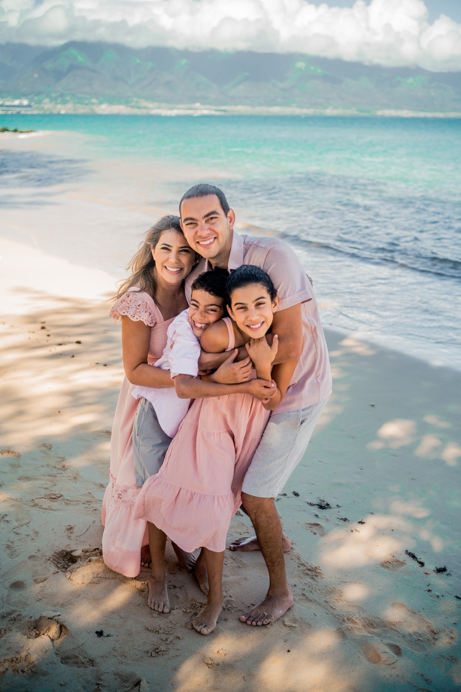

Your Turquoise + Water session at Kanahā Beach.
BY LAURENCE BALTER · FOUNDER & LEAD PHOTOGRAPHER, WAILEA PHOTO

Kanahā Beach Park, Lifeguard Station 10B.
Your photoshoot is located at beautiful Kanahā Beach Park. We will meet at Lifeguard Station 10B.
As you approach the end of the road, take the very last entrance before the dead end. Continue to the meeting area for Station 10B.

If you need to stop for a restroom prior to the arrival.
There is no restroom at the session location. The closest restroom is at the Courtyard by Marriott near the airport.
If anyone in your group may need a restroom, stop before continuing to Kanahā Beach Park so your family can arrive together and ready to begin.
- Map: Open the Wailea Photo map links before you leave.
- Entrance: Take the final entrance before the road ends.
- Meeting point: Lifeguard Station 10B.
- Restroom: There is none at the location; stop near the airport first.
- Timing: Plan enough travel time to be ready at your scheduled start.
What to know before leaving for Kanahā.
Where exactly do we meet?
Meet your photographer at Kanahā Beach Park, Lifeguard Station 10B. Take the very last entrance before the dead end.
Can we use our car GPS or Uber map?
No. Use only the map links supplied on this page. Other navigation results may lead to a different section of the park.
Is there a restroom at the beach?
No. The closest restroom is at the Courtyard by Marriott near the airport. Stop there before continuing to the meeting location if needed.
What if we are running late?
Call Wailea Photo at 808.298.5188. Portrait time and light are limited, so please plan to arrive ready at your scheduled start.